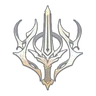
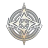
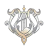
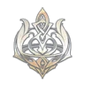

Klasy: skille, pasywki i stygmy
Skille aktywne, pasywki i stygmy ośmiu klas Aion 2 w edycji Global (Steam, EU). Po wybraniu klasy wszystko jest na jednej stronie, w tej kolejności.
Co jest w środku
Poradnik jest pod Globala, nie pod serwery koreańskie. Nazwy skilli zostają po angielsku, tak jak w kliencie. Opis przy skillu jest po polsku. Tam, gdzie autor miał gotowe opracowanie (Gladiator, Spiritmaster, Chanter), tekst kart jest z niego. Reszta klas jest złożona z Aion 2 Companion i aion2.gg, a liczby są podpisane poziomem, przy którym je podaje źródło.
- Skille aktywne — to, co wciskasz. Przy każdym: nazwa, ikona, krótki opis, zalecany poziom albo „brak danych”, specjalizacje, link do źródła.
- Pasywki — działają same. Nie mają specjalizacji.
- Stygmy — osobna waluta i cztery sloty. Perki wchodzą na poziomach 5, 10, 15 i 20 i zostają wszystkie.
Klasy
-

DPS wręcz · Greatsword Gladiator Miecz dwuręczny. DPS pierwszej linii; wysokie HP pozwala też na chwilę zastąpić tanka. -
 Tank · Longsword
Templar
Tank z tarczą i mieczem jednoręcznym. Trzyma przód grupy i osłania sojuszników.
Tank · Longsword
Templar
Tank z tarczą i mieczem jednoręcznym. Trzyma przód grupy i osłania sojuszników.
-
 DPS wręcz · Dagger
Assassin
Dwa sztylety, wejście ze skradania i combo z trucizną albo ogłuszeniem.
DPS wręcz · Dagger
Assassin
Dwa sztylety, wejście ze skradania i combo z trucizną albo ogłuszeniem.
-
 DPS dystansowy · Bow
Ranger
Łuk. Atakuje z daleka i trzyma szeroki widok na pole walki.
DPS dystansowy · Bow
Ranger
Łuk. Atakuje z daleka i trzyma szeroki widok na pole walki.
- DPS magiczny · Spellbook Sorcerer Magiczne obrażenia z księgi. Niższe HP i obrona, w zamian kontrola tłumu.
-

DPS magiczny · Orb Spiritmaster Walczy przywołaniami oraz magią statusów i obrażeń w czasie, z dystansu. -

Healer · Mace Cleric Healer. Utrzymuje HP sojuszników i jest podstawą składu grupy. -

Wsparcie · Staff Chanter Wsparcie laską: podnosi statystyki grupy i może jednocześnie leczyć albo zadawać obrażenia.
Jak czytać odznakę poziomu
Złota odznaka to priorytet, przy którym źródła są zgodne albo który build oznacza jako pierwszy. Błękitna i fioletowa to średni albo niski priorytet. Przerywana ramka „brak danych” zostaje, gdy da się opisać skill, ale nikt nie podał jednej docelowej rangi. Reset skilli i specjalizacji jest darmowy.